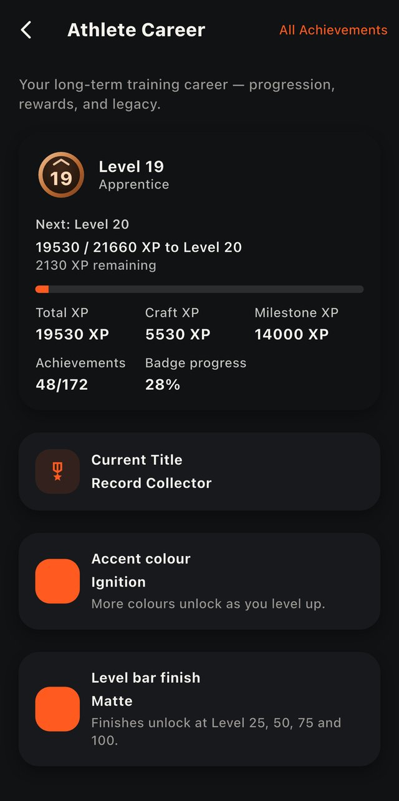
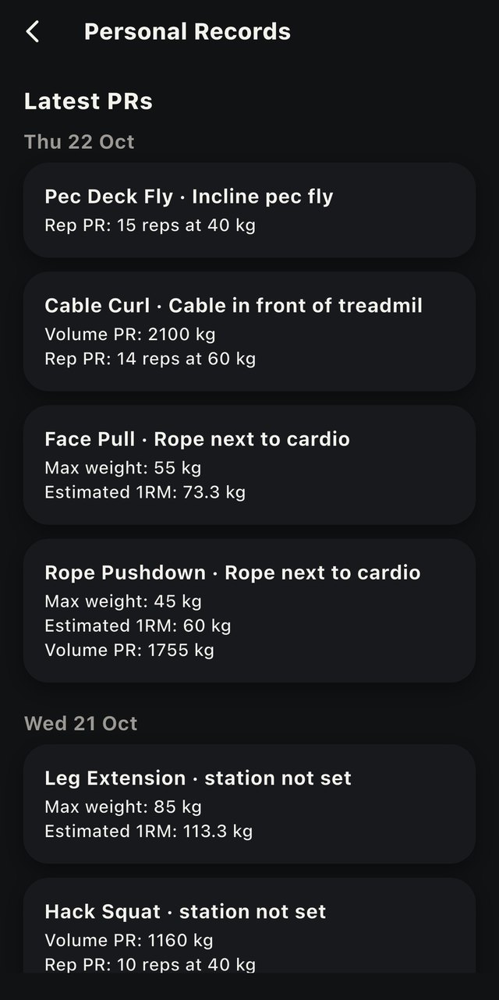
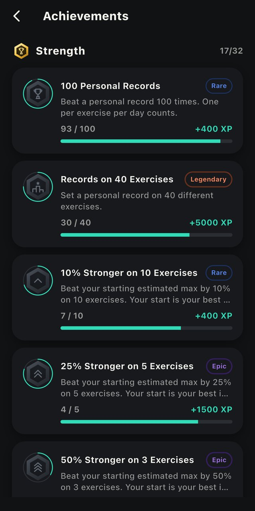
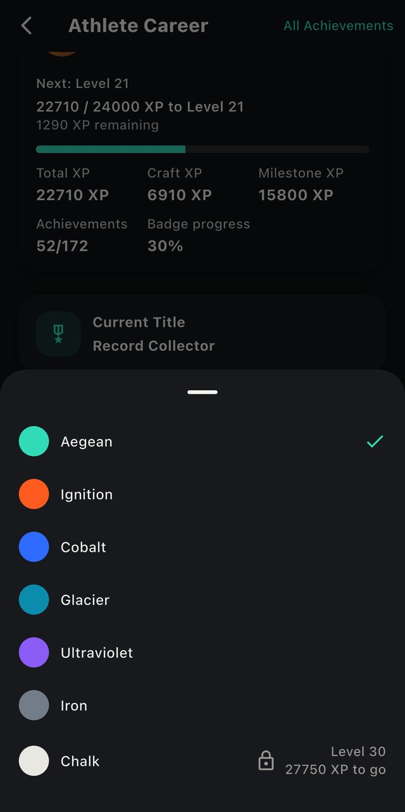

Train by the evidence.
Kompsatos is a training app built by a physiotherapist who lifts. Its progression rules, coaching notes and targets are built on published research, not trends.
Free, through Apple's TestFlight: open the link on your iPhone. On Android, or the beta is full? Join the waitlist.

A coach that reads your training, not your mood.
Plans that know your week
Log every set with weight, reps and reps in reserve. Your next load comes from your own recent performance, and a weekly review sums up what you did.
Records that are real
Your first log of an exercise is your starting point, not a record. Records count per exercise and per machine, and a jump bigger than training can explain (more than 1.5× your heaviest load) starts a new baseline instead of a fake record. One badge per set.
The rest of your week, in context
Sleep, body weight and waist trends sit next to your training, with protein and rate-of-loss guidance taken from meta-analyses.
Rewards for consistency, not for overdoing it
172 achievements, 100 levels, titles and colours you unlock. Points come from keeping your plan, never from extra volume.



The numbers come with sources.
A few of the rules inside the app, and where they come from.
Daily protein beyond which extra protein added little to muscle gain in adults doing resistance training.
Morton RW et al. Br J Sports Med 2018;52:376–384 (meta-analysis, 49 trials).Rate of body-weight loss recommended to keep muscle during a cut.
Helms ER, Aragon AA, Fitschen PJ. J Int Soc Sports Nutr 2014;11:20.Tested powerlifting results behind the strength levels you can unlock for squat, bench press and deadlift.
van den Hoek DJ et al. J Sci Med Sport 2024;27(10):734–742.Estimated maxes are trusted up to 10 reps to failure. Longer sets count only as a lower bound, because predictions get less accurate as reps go up.
Reynolds JM, Gordon TJ, Robergs RA. J Strength Cond Res 2006;20(3):584–592.Hi, I'm Dimitris.
I'm a physiotherapist and I train. I built Kompsatos to fix the mistakes I and the athletes around me made for years. I share every step of the build, the research behind each decision, and my own training with the app. The name comes from the Kompsatos, a river in Thrace, northern Greece.
Where it's going.
- NowOpen beta on iPhone through TestFlight, with a weekly review of your training. Places are limited.
- NextShare cards for your progress, Apple Health import for weight and sleep.
- LaterLeagues: weekly groups, country and world rankings. They open once 100 athletes have joined.
The coach is free. Always.
Training guidance should never sit behind a paywall. Pro adds depth and convenience on top. No ads, ever, and your data is never sold.
Kompsatos
- Unlimited logging, plans and load suggestions
- Records and estimated maxes per machine
- Coaching insights, sleep, body and nutrition guidance
- All achievements, levels, titles and colours
- Weekly review, and leagues when they launch
- Backup and restore
Kompsatos Pro
- Full chart history (Free shows 3 months)
- Export to CSV and PDF for your coach or physio
- Apple Watch logging and rest timer
- Home-screen widgets and Lock Screen timer
- Pro icons and themes
- Early access to new features
Founding Athletes
- For beta testers who stay active for 4 weeks or more
- A permanent “Founding Athlete” title that can never be bought
Prices are planned and may change before launch. Local prices vary by country. Nothing that is earned in the app (XP, league places, titles, season rewards) can ever be bought.
Questions people ask.
Is Kompsatos free?
Yes. The coach is free, always: logging, plans, load suggestions, records and guidance. A paid Pro tier is planned for extras such as full chart history and export.
When do I get access to the beta?
Right away, on iPhone. Open the beta link on your iPhone, install Apple's TestFlight app if it asks, then tap Install. Places are limited; if the beta is full, join the waitlist and you will hear from us when places open.
Is there an Android version?
Not yet. Kompsatos is iPhone only for now. Android users can join the waitlist and will be the first to hear if an Android version happens.
Do I need an account, and where does my data go?
No account is needed. As a guest everything stays on your phone. With an account, and only with your explicit consent, your training is backed up to a database in Frankfurt, Germany, so you can restore it on another phone. No ads, no analytics, and your data is never sold. Details in the privacy policy.
Is this medical advice?
No. Kompsatos gives training information based on published research. If you have pain, an injury or a medical condition, talk to a qualified health professional.
Want in?
On iPhone, open the beta link and install it through Apple's TestFlight. On Android, or if the beta is full, leave your email and we will let you know.
Free. The waitlist is only used to tell you about the beta. See the privacy policy.